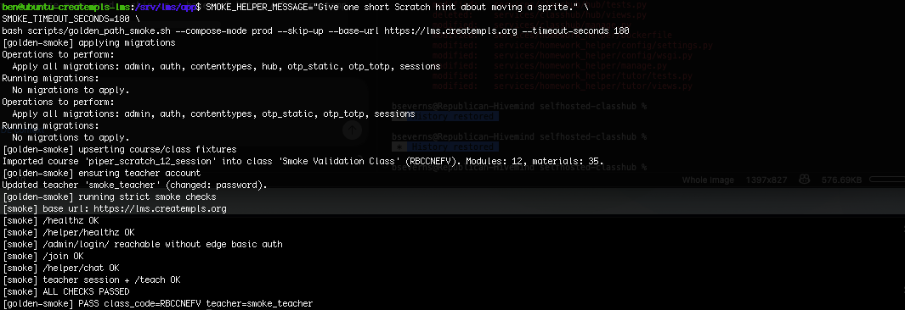

Start Here: Ops Director¶
What ClassHub is¶
ClassHub is an operations-friendly learning hub for running cohorts, managing staff access by Organization, controlling enrollment, exporting outcomes, and rehearsing recovery from backups without depending on a large vendor ops team.
What ClassHub is not¶
- It is not a hands-off SaaS with opaque admin controls.
- It is not a student identity provider.
- It is not a substitute for ops discipline around backups, restore drills, and role assignment.
5-minute overview¶
- Staff authenticate in
/teach. - Superusers can manage organizations, class-org boundaries, staff memberships, and teacher account lifecycle in the teacher portal.
- Teachers can set
Enrollment modetoOpen,Invite only, orClosed. - Invite links can expire and enforce seat caps.
- Ops can rely on exports, backup/restore rehearsal, and documented smoke checks.
- Program defaults can be selected with
CLASSHUB_PROGRAM_PROFILE(elementary,secondary,advanced) and overridden as needed. - Terminal-first facilitators can run class controls through
hubctl(HUBCTL.md).
Visual references¶



Operations captures:


What success looks like¶
- The right staff can access the right classes without sharing accounts.
- Invite-only cohorts can open and close cleanly.
- Routine reporting is export-driven, not screenshot-driven.
- Restore rehearsal is documented and repeatable.
- Incidents have a known path: detect, contain, recover, verify, communicate.
Where revenue can come from¶
ClassHub does not create revenue by itself. What it does do is make a few earned-income models easier to operate without adding a large admin burden:
- paid cohorts with controlled enrollment using
Invite link+ seat caps - partner-funded classes where each
Organizationor cohort needs bounded staff access - completion-based programs that need
Outcomes exportandCertificate eligibility/issuance - repeat offerings where staff can reuse the same operating pattern instead of rebuilding from scratch
The operational question is not "Can the software sell?" It is "Can staff run a paid or sponsored program cleanly enough that the margin is not eaten by manual admin work?"
Revenue-support signals to watch¶
- time from cohort announcement to first successful student join
- number of invite/support issues per cohort
- staff time spent on roster cleanup and closeout reporting
- time to produce completion evidence for a partner or payer
- certificate issuance rate for programs that promise a completion artifact
Risks avoided¶
- Avoids broad staff access when org boundaries are configured and reviewed.
- Avoids storing more student identity data than the workflow needs.
- Avoids silent data loss by requiring backups and recovery rehearsal.
- Avoids helper data sprawl by not storing helper prompt content.
What to review next¶
- Daily and weekly operating procedures: RUNBOOK.md
- Teacher portal permissions, org access, and exports: TEACHER_PORTAL.md
- Staff account lifecycle and terminal procedures: STAFF_ACCOUNT_OPS.md
- Server bootstrap baseline: BOOTSTRAP_SERVER.md
- Revenue-oriented program framing: PROGRAM_LIFECYCLE.md, START_HERE_FUNDRAISING.md
- Restore and recovery process: DISASTER_RECOVERY.md
- Incident handling and evidence preservation: INCIDENT_RESPONSE.md
- Security baseline and staff/org boundary controls: SECURITY.md
- Governance/support boundary: TOOL_CHARTER.md
- Program profile defaults and overrides: PROGRAM_PROFILES.md
- Common break/fix playbooks: TROUBLESHOOTING.md